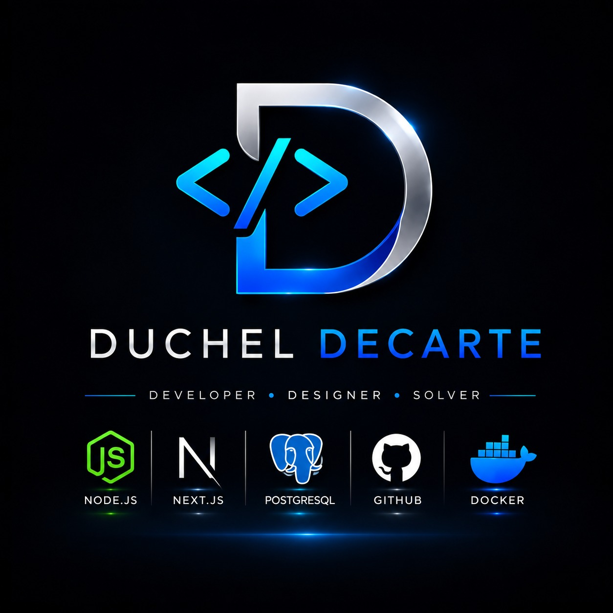

Live
LiveE-commerce · 2024
↗FOROMAMED
Smart shopping for orthopedic equipment in Yaoundé, with FCFA pricing and product discovery.
ReactTypeScriptSupabase

DUCHEL. Let's talk ↗I’m Duchel Decarte, a Junior Software Engineer focused on creating reliable, thoughtful experiences for the web.
I believe good software should feel simple, even when the problems behind it are complex.
From e-commerce platforms to offline-first business tools, I enjoy turning real-world needs into clear, useful products. I’m building my career with intention: learning constantly, collaborating openly, and shipping work I’m proud of.
Get to know me →Technology that makes everyday work easier.
Clean foundations, thoughtful details, steady growth.
Curious about better tools and better ways to build.
My everyday stack is focused on building modern, fast and maintainable products from front to back.
Discovered web development and built strong foundations in HTML, CSS and JavaScript.
Moved into React and TypeScript, building more complex interfaces and learning how to structure products for growth.
Delivered e-commerce, medical, chemical and internal business products for clients in Cameroon and France.
Real products, real constraints, and a lot of care in the details.
Live Live
Live Private
Private Live
LiveWhether you have a clear brief or just an early idea, I’d be happy to hear about it.